Энергонезависимый дом - дом будущего
 Пассивный, или энергонезависимый дом (англ. passive house) - это дом,
основной особенностью которого является малое энергопотребление.
Пассивный, или энергонезависимый дом (англ. passive house) - это дом,
основной особенностью которого является малое энергопотребление. 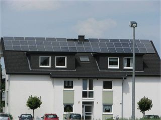
В идеале, пассивный дом должен быть независимой энергосистемой, вообще не требующей расходов на поддержание комфортной температуры.Отопление пассивного дома должно происходить благодаря теплу, выделяемому живущими в нем людьми, бытовыми приборами и альтернативными источниками энергии.
Горячее водоснабжение осуществляется за счет установок возобновляемой энергии, например, тепловых насосов или солнечных коллекторов.
В зависимости от конструкции стен дома через них теряется до 35-45% тепла, полученного в ходе работ систем отопления. Фактически большинство домов, построенных по классическим технологиям, отапливают улицу.
Наиболее очевидная и лежащая на поверхности цель повышения энергоэффективности жилых зданий - сокращение энергопотребления, что экономит как прямые затраты на обслуживание здания и поддержание в нем необходимой температуры, так и косвенно положительно влияет на экологическую обстановку за счет сокращения необходимых в любом другом случае генерирующих мощностей. Структура энергопотребления домов, построенных по стандартным технологиям, существенно отличается от энергопотребления энергоэффективных домов.
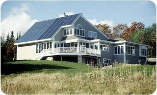
Другая цель создания энергоэффективных зданий - сокращение использования традиционных источников энергии, при работе с которыми природные ресурсы (в том числе углеводороды) необратимо расходуются, и замена таких источников возобновляемыми. Такой подход также обеспечивает как значительную экономию, так и максимальную экологичность возводимых зданий.Несмотря на сдерживание роста тарифов на тепло- и электроэнергию, стоимость электроэнергии для конечного потребителя за последние десять лет выросла в 5,4 раза.
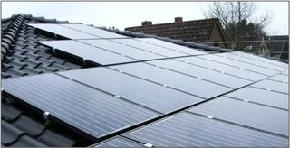
Саму идею обеспечения максимальной энергоэффективности сложно назвать новой: еще в конце 1970-х гг. в Финляндии был построен комплекс «EKONO HOUSE» в городе Отаниеми. В здании, кроме сложного объемно-планировочного решения, учитывающего особенности расположения и климата, была применена особая система вентиляции, при которой воздух нагревался за счет солнечной радиации, тепло которой аккумулировалось специальными стеклопакетами и жалюзи. Также в общую схему теплообмена здания, обеспечивающую энергоэффективность, были включены солнечные коллекторы и геотермальная установка.Форма скатов кровли здания учитывала широту места строительства и углы падения солнечных лучей в различное время года.
Логическим продолжением экспериментов по формированию подхода к строительству энергоэффективных зданий стала концепция энергонезависимого дома (также называемого «пассивным» либо «энергопассивным»), разработанная в Германии доктором Вольфгангом Файстом, основателем Института Пассивного дома в немецком городе Дармштадт. За двадцать лет существования технологии было проведено множество глубоких исследований влияния на термостатирование зданий многочисленных факторов,
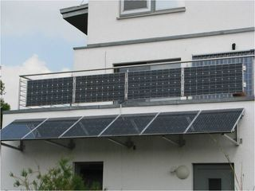
как в процессе строительства, так и в процессе эксплуатации, отработаны программы расчета и технологии строительства. На базе сформированных знаний стало возможным широкое распространение энергонезависимых домов не только в Германии, но и во всех странах Запада. В таких домах применяются самые современные строительные материалы, конструкции, и инженерное оборудование, и на сегодняшний день энергонезависимый дом - это самый совершенный дом с точки зрения комфорта, энергопотребления и внутреннего климата помещений.Экономичность: благодаря низкому энергопотреблению экономится значительная часть средств, необходимых для теплоснабжения, подогрева воды, кондиционирования и других элементов обеспечения климатического режима в доме.
Экологичность: для функционирования дома нужен минимальный объем электроэнергии, в связи с чем практически исключены вредные выбросы в атмосферу. Массовое внедрение технологии энергонезависимого дома позволяет значительно сократить необходимость работы существующих генерирующих мощностей и снять необходимость ввода новых. Помимо этого сокращается объем выброса парниковых газов в 7-10 раз.
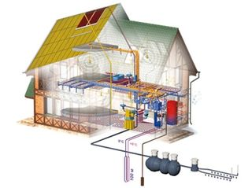
Комфорт: чистый, теплый свежий воздух, теплые стены и полы вызывают ощущение пребывания в горной местности в летний период. Если учесть, что человек за свою жизнь более 50% находится в жилище, то такая комфортная среда обитания внутри энергонезависимого дома благотворно влияет на здоровье человека и способствует продлению его жизни. Лучше всяких цифр об этом говорят отзывы людей, которые неизменно говоря: «мы никогда не замерзали», «мы определенно построили бы энергонезависимый дом снова», «нам никогда еще не было настолько комфортно».Реальная энергонезависимость: концепция энергонезависимого дома позволяет возводить строения на территориях, не оборудованных традиционными инженерными коммуникациями (газ, теплоцентраль), а в определенных случаях - и без подведения коммунальных электросетей.
Современная строительная отрасль, поддерживая научные изыскания, нацелена на снижение теплопотерь за счет внедрения современных теплоизоляционных материалов, сокращения мостиков холода, применения высокотехнологичных конструкционных материалов. Однако нельзя не признать, что обособленная реализация такого подхода не дает эффекта, равного применению концепции энергонезависимого дома.
Конечно, современные строительные нормы и применение качественных материалов способно значительно снизить теплопотери здания, и, за счет этого, - энергопотребление, затрачиваемое на отопление. Учитывая, что именно на обогрев помещения затрачивается основная часть потребляемой энергии, этот результат можно было бы считать вполне удовлетворительным, однако результаты исследований показывают, что возведение здания в соответствии с концепцией энергонезависимого дома позволяет сократить на отопление более чем на 70%.
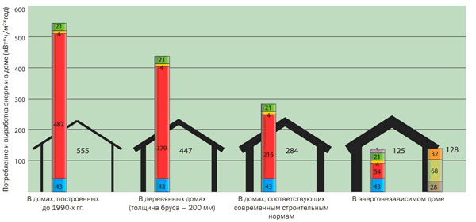
ЭНЕРГОНЕЗАВИСИМЫЙ ДОМ: БУДУЩЕЕ СЕГОДНЯ
За счет чего достигается такая экономия? В первую очередь - за счет комплексности мер, направленных на максимальную энергоэффективность. Решать проблему теплопотерь в зданиях, нельзя исключительно за счет повышения характеристик теплоизоляции. Только комплексное применение современных теплоизоляционных материалов, архитектурных приемов и новейших инженерных систем позволяет достичь поставленной цели.
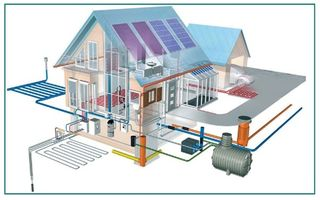
Так, проектирование энергоэффективного здания проводится с учетом климатических условий региона, с определением оптимальной формы здания и его габаритов для уменьшения площади внешней поверхности без потери внутреннего объема здания. За счет меньшей площади внешней поверхности уменьшаются и расходы энергии, связанные с теплопотерями.Дополнительно к этому технология энергонезависимого дома предусматривает эффективную теплоизоляцию всех ограждающих поверхностей - не только стен, но и пола, потолка, чердака, подвала и фундамента, для чего формируется несколько слоев теплоизоляции - внутренняя и внешняя, а также производится устранение «мостиков холода» в ограждающих конструкциях. В результате в пассивных домах теплопотери через ограждающие конструкции практически в 10 раз ниже, чем в обычных зданиях.
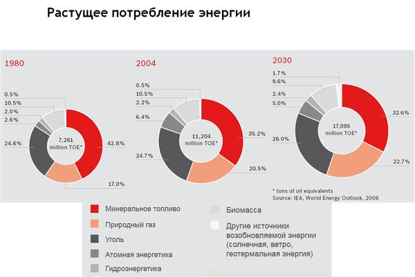
В США стандарт требует потребления
энергии на отопление дома не более 1 BTU (Британская тепловая единица)
на квадратный фут помещения, в Великобритании энергонезави-симый дом
должен потреблять энергии на 77% меньше обычного дома, а с 2007 года
каждый дом, продаваемый в Англии и Уэльсе, должен получить рейтинг
энергоэффективности. Каждый продающийся дом осматривается независимым
инспектором, который определяет рейтинг эффективности дома с точки
зрения потребления энергии и выбросов СО2. В Ирландии пассивный дом
должен потреблять энергии на 85% меньше стандартного дома, и выбрасывать
в атмосферу СО2 на 94% меньше обычного дома. Новые дома Испании с
марта 2007 оборудуются солнечными водонагревателями, чтобы
самостоятельно обеспечивать от 30% до 70% потребности в горячей воде, в
зависимости от места расположения дома и ожидаемого потребления воды.
На сегодняшний день в мире построено более 7000 пассивных домов,
офисных зданий, магазинов, школ, детских садов. Большая их часть
находится в Европе.
Но для создания комфортной среды обитания в
доме его необходимо оживить. И тут на помощь приходят различные
инженерные системы. За электроснабжение отвечают фотоэлектрические
солнечные батареи и ветрогенератор. Поскольку энергоснабжение от таких
источников как солнце и ветер носит нестабильных характер, требуется
установка резервного генератора и системы аккумулирования.
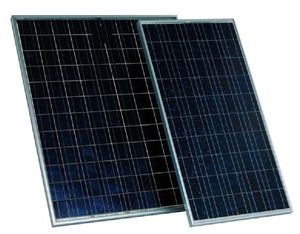 |
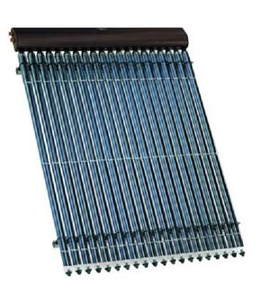 |
| Фотоэлектрические солнечные батареи | Вакуумно-трубчатый солнечный коллектор с принципом «тепловой трубы» |
Системы отопления и горячего водоснабжения тепловой энергией снабжают геотермальный тепловой насос и солнечный коллектор. Солнечный коллектор напрямую преобразует солнечную энергию в тепло и направляет его на поддержание системы горячего водоснабжения. В условиях отсутствия завозимого углеводородного топлива и экономии вырабатываемой электроэнергии прямой электрический обогрев был бы нерациональным решением, поэтому применяется тепловой насос на 1 кВт затраченной электрической энергии поставляющий 4,5 кВт тепловой энергии. Дополнительные 3,5 кВт энергии тепловой насос с помощью грунтового теплообменника перекачивает из грунта, повышая температурный потенциал энергии, запасенной в грунте.
Любой дом требует вентиляции воздуха и уж тем более дом, представляющий собой полностью герметичный объем. В системе принудительной приточно-вытяжной вентиляции применяются современные вентиляционные установки с рекуперацией тепла и влаги удаляемого воздуха. Данные установки способны вернуть до 90 % тепловой энергии из удаляемого воздуха в подаваемый в помещения свежий воздух. В летний период данная система имеет обратное действие, т.е. охлаждает подаваемый воздух.
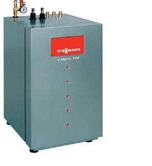 |
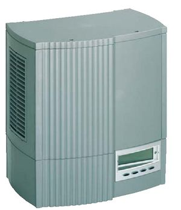 |
| Геотермальный тепловой насос | Инвертор для фотоэлектрических солнечных батарей |
Схема взаимодействия инженерных систем энергонезависимого дома
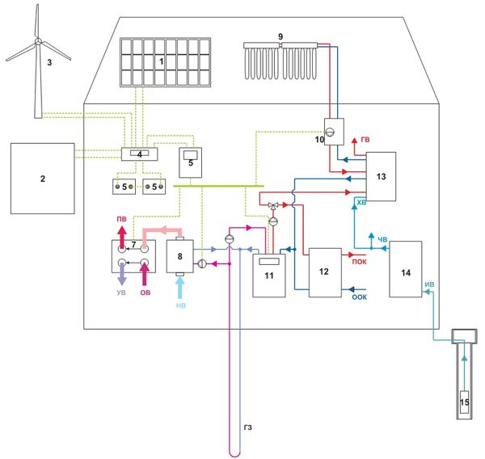
Схема взаимодействия инженерных систем энергонезависимого дома:
1 - Фотоэлектрические модули
2 - Электрогенератор (Микро ГЭС,Микро ТЭС)
3 - Ветрогенератор
4 - Блок контроля заряда/разряда АКБ
5 - Аккумуляторные батареи
6 - Инвертор
7 - Рекуператор
8 - Система предварительного темперирования наружного воздуха
9 - Солнечные коллекторы
10 - Смеситель солнечного коллектора
11 - Тепловой насос
12 - Буферная емкость
13 - Емкостной водонагреватель
14 - Водоочистная установка
15 - Скважинный насос
ГЗ - грунтовый зонд
НВ - наружный воздух
ПВ - приточный воздух
ОВ - отходящий воздух
УВ - удаляемый воздух
ХВ - холодная вода
ГВ - горячая вода
ПОК - подача отопительного контура
ООК - обратка отопительного контура SolarDivicon
ИВ - Исходная вода (из скважины или озера)
ЧВ - Очищенная вода